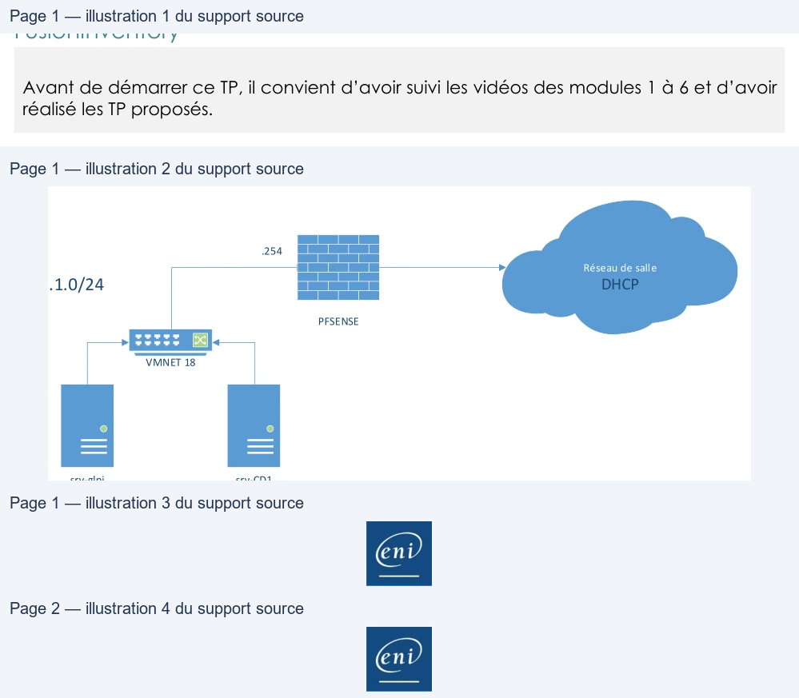

Transcription du document du Drive TSSR. La mise en forme est adaptée au Web ; les compléments IA du portail sont présentés séparément.
GLPI
TP du Module 6 – Présentation des plugins – Inventaire avec
FusionInventory
Avant de démarrer ce TP, il convient d’avoir suivi les vidéos des modules 1 à 6 et d’avoir
réalisé les TP proposés.
Objectifs
•
Installer le plugin FusionInventory et l’agent.
Prérequis
•
Avoir un serveur GLPI fonctionnel.
Contexte :
•
La société Olympus vous demande d’installer le plugin FusionInventory et l’agent sur
l’application GLPI au sein de son domaine.
Adressage IP des VM : 192.168.1.0/24 + DHCP salle
.254
Réseau de salle
DHCP
192.168.1.0/24
PFSENSE
VMNET 18
srv-glpi
srv-CD1
.1
.2
Principales tâches à réaliser
Installation du Plugins FusionInventory.
•
Récupérez depuis le serveur Debian, le fichier fusioninventory-9.5.0+1.0.tar.bz2.
Page 1/2
© ENI – Tous droits réservés
A.
GLPI
Utilisez de WinSCP afin de récupérer le fichier.
•
Extrayez
l’archive
fusioninventory-9.5.0+1.0.tar.bz2
dans
le
répertoire
/var/www/glpi/plugins.
cp /home/debyann/ fusioninventory-9.5.0+1.0.tar.bz2 /var/www/glpi/plugins/
cd /var/www/glpi/plugins
tar xvjf fusioninventory-9.5.0+1.0.tar.bz2
•
Changez l’utilisateur propriétaire pour www-data sur ce répertoire et tout son
contenu.
chown -R www-data /var/www/glpi/plugins
•
Installez et activez le plugin dans l’interface GLPI.
Menu Configuration - Plugins dans l’interface.
Au bout de la ligne fusioninventory > installer puis activer.
•
Installez l’agent FusionInventory sur votre contrôleur de domaine Olympus.gr.
Image de correction disponible dans les ressources.
Bonus
•
Activez le marketplace puis installez le plugin « Data injection ».
Allez sur le site
Image de correction disponible dans les ressources.
Utilisez les 2 fichiers CSV disponibles avec les ressources des TPs.
•
Un fichier avec seulement les en-têtes et un autre rempli est disponible auprès du
formateur.
Page 2/2
© ENI – Tous droits réservés
